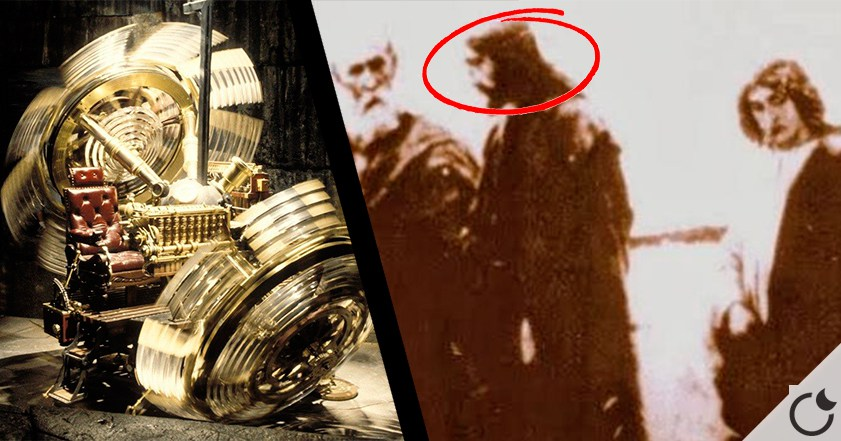

O que seria essa "máquina do tempo"?
Segundo a teoria, o Vaticano possui um dispositivo chamado:
“Cronovisor”
Um suposto aparelho desenvolvido no século XX que permitiria ver eventos do passado (e, talvez, do futuro) como se fossem projeções.
Sua origem
Padre Pellegrino Ernetti (1925–1994)
Um monge beneditino italiano que, junto com uma equipe de cientistas, teria criado o Cronovisor. Ernetti afirmou que o dispositivo poderia captar e reproduzir imagens e sons de eventos históricos.
Ele alegou que o Vaticano o utilizava para estudar a história e a teologia, mas que a Igreja mantinha o dispositivo em segredo para evitar controvérsias.
Como funcionaria?
O Cronovisor seria capaz de captar ondas eletromagnéticas emitidas por eventos passados, permitindo que as pessoas vissem e ouvissem esses eventos como se estivessem lá. A teoria sugere que o Vaticano usaria essa tecnologia para estudar a história da Igreja e do mundo.
Alguns teóricos afirmam que o Cronovisor poderia ser usado para ver eventos como a crucificação de Jesus, a queda do Império Romano ou até mesmo eventos futuros.
Embora a teoria do Cronovisor seja intrigante, não há evidências concretas de sua existência. A maioria dos cientistas considera a ideia de uma máquina do tempo ou um dispositivo que possa ver o passado como impossível, devido às leis da física e à falta de evidências empíricas.
Apesar disso, a teoria do Cronovisor continua a fascinar muitas pessoas e é frequentemente mencionada em discussões sobre teorias da conspiração, ocultismo e a relação entre ciência e religião.
Por que estaria escondido?
Os teóricos sugerem que o Vaticano esconderia essa máquina do tempo para evitar que informações sensíveis ou potencialmente disruptivas fossem divulgadas ao público. A ideia é que, se as pessoas soubessem que o Vaticano pode ver eventos do passado, isso poderia levar a questionamentos sobre a história da Igreja e suas doutrinas.
Além disso, a teoria sugere que o Vaticano poderia usar o Cronovisor para influenciar eventos futuros ou tomar decisões estratégicas com base em informações do passado, o que tornaria essa tecnologia extremamente valiosa e perigosa se caísse em mãos erradas.
Fatos e ceticismo
Embora a teoria do Cronovisor seja fascinante, é importante notar que não há evidências concretas de sua existência. A maioria dos cientistas considera a ideia de uma máquina do tempo ou um dispositivo que possa ver o passado como impossível, devido às leis da física e à falta de evidências empíricas.
Além disso, muitos consideram a teoria do Cronovisor como uma lenda urbana ou uma invenção da cultura popular, sem base na realidade.
Apesar disso, a teoria do Cronovisor continua a fascinar muitas pessoas e é frequentemente mencionada em discussões sobre teorias da conspiração, ocultismo e a relação entre ciência e religião.
Ernetti deu entrevistas, mas depois teria “recuado” em suas afirmações, embora algumas pessoas acreditam que ele foi silenciado.
Por que essa teoria é tão popular?
A teoria do Cronovisor é popular por várias razões:
E se fosse verdade?
Se a teoria do Cronovisor fosse verdadeira, isso levantaria questões éticas e filosóficas profundas sobre o uso da tecnologia para acessar o passado. Poderia haver implicações significativas para a história, a religião e a compreensão humana do tempo e da realidade.
Além disso, a existência de tal dispositivo poderia levar a debates sobre a privacidade histórica, a manipulação do passado e o papel da Igreja na sociedade moderna.